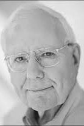

|  |
2009 год Charles P. Thacker (1943-2017) «За новаторскую разработку и создание первого современного персонального компьютера Alto в Xerox PARC, а также за важнейший вклад в области сетей (включая Ethernet), многопроцессорных рабочих станций, протоколов отслеживания когерентности кэша и планшетных персональных компьютеров» |
Страна: США
Образование: Бакалавр науки в области физики, Калифорнийский университет (Беркли), 1967
О лауреате
Thacker принимал участие в разработке множества компьютерных систем: SDS-940 в проекте Genie, BCC500 в Berkeley Computer Corporation, MAXC и Alto в Xerox PARC, Alpha в Digital Equipment Corporation. Alto был разработан так, чтобы легко добавлять новые устройства ввода/вывода. Одним из первых расширений была локальная сеть Ethernet, изобретенная R. Metcalfe, с помощью Thacker в вопросах линий связи. Ethernet позволял Alto подключаться к распределенной системе, и большая часть ранних распределенных систем, включая систему электронной почты Grapevine, была запущена на Alto. В 1983 году большая часть основной команды перешла в DEC. Как и в PARC, первым проектом было создание вычислительной инфраструктуры для лаборатории, результатом которого стала Firefly, первая многопроцессорная рабочая станция с когерентными кэшами. Firefly был разработан Thacker и L. Stuwart и служил, в качестве основы для нескольких проектов в области распределенных систем.
Ключевые слова: Alto, Ethernet, LAN, Multiprocessor systems
Краткая библиография
| 1. |
Thacker, Charles P., Lawrence C. Stewart Edwin H. Satterthwaite, Jr., “Firefly: A Multiprocessor Workstation,” IEEE Transactions on Computers, Vol. 37, Num. 8, August 1988, pp. 909 – 920. Авторы описывают цели, аппаратные средства, программную систему и производительность Firefly, а также обсуждают, насколько было успешным предоставление программному обеспечению использования многопроцессорности. |
| 2. |
Thacker, Charles P., “Personal distributed computing: the Alto and Ethernet hardware,” A history of personal workstations, January 1988, ACM, New York. Thacker описывает свою личную историю, связанную с Alto и Ethernet. |
| 3. |
Thacker, Charles P., David G. Conroy, Lawrence C. Stewart, “The Alpha demonstration unit: a high-performance multiprocessor,” Communications of the ACM, Vol. 36, Num. 2, Feb. 1993, pp. 55-67. Подробное описание проекта DEC Alpha. |
| 4. |
Thacker, Charles P., “Improving the future by examining the past: ACM Turing Award Lecture,” Proceedings of the 37th annual international symposium on Computer architecture, pp. 348-348, ACM, New York, 2010. В этой лекции Thacker описывает, насколько значительно улучшились технологии, лежащие в основе компьютерных систем, за последние пятьдесят лет. По мере развития технологий разработчики приняли ряд решений о том, как их применялись в компьютерах. В некоторых случаях решения, которые были сделаны в двадцатом веке, не имеют смысла в двадцать первом и наоборот, те, которые не были приняты, теперь могут быть привлекательными с учетом современных технологий, особенно в свете ограничений, таких как увеличение разрыва между скоростью процессора и временем доступа к памяти и трудностью охлаждения современных компьютеров. |